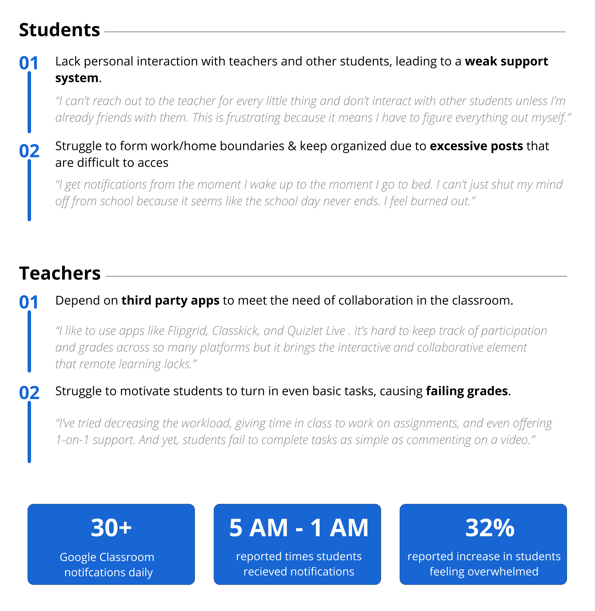
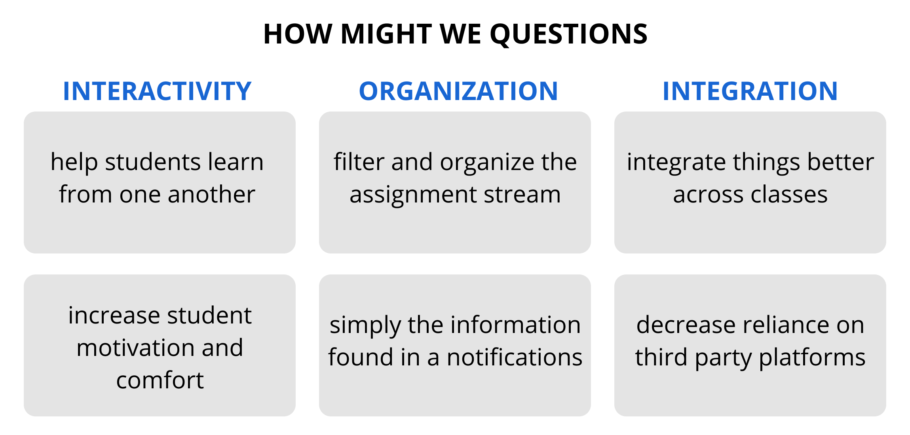

This March, my university switched to remote learning as a result of the pandemic. As a college
student, though the transition to fully online learning wasn’t ideal, it was still relatively
smooth.
However, for my younger sister, a highly motivated, straight-A high school student, the transition
was a struggle. She was constantly overwhelmed with notifications, missed assignment deadlines,
and found it difficult to communicate with her teachers. As I talked with her friends and other
students, I realized everyone else was struggling too.
Before the pandemic, teachers could easily support students in the classroom — they could
customize an assignment on the fly to fit their students needs or give reminders about upcoming
events to make sure everyone was on track. Now, students have a lot less support than they’re
used to. It’s up to them to wade through an average of 30+ Google Classroom notifications a
day to find that one reminder, shoot that first email when they’re falling behind, and keep
themselves organized. To solve this problem, I designed the Bulletin Board feature to allow
teachers to more easily support and motivate students as schools switch to online learning.
WHY GOOGLE CLASSROOM
During COVID-19, there were several different online platforms that schools adopted from
Microsoft Teams to Canvas. So why Google Classroom? Google not only accounts for 60% of the
Ed Tech market by supplying schools K-12 with laptops and tablets, but Google Classroom saw
a growth rate of 135% during the last 3 months of 2019 in the U.S. alone. With so many students
and teachers depending on this platform as a replacement for the traditional classrooms,
it needs to be better.
USER RESEARCH
I decided to dive into user research and interviews in order to better discover how different
users interact in Google Classroom, organize their assignments, and stay on top of their
schoolwork. I interviewed five types of users who use Google Classroom on a daily basis.
Students
The Student Leader: this user is a highly motivated student with leadership positions at
school, uses the student and teacher interface of Google Classroom
The Athlete: this user manages a busy class and extracurricular schedule side by
side on Google Classroom
The Average Student: this user has no commitments outside of the classroom and
uses Google Classroom for class work purposes only
Teachers
The Experimenter: this user is constantly looking for new ways to make their
lessons and assignments more engaging to help motivate their students, working with
platforms outside of Google Classroom
The Average Teacher: this user teaches a wide range of students crossing all
academic levels including regular classes and extracurriculars, working within the
constraints of Google Classroom to support students
Key Findings
During these interviews, I asked users to walk me through a school day before and after the
pandemic, highlighting the key differences in their interactions with Google Classroom. This
is what I learned:

THE PEOPLE PROBLEM
Students want to feel motivated in school and keep up with their coursework but it’s
difficult because:
There are too many posts and assignments to manage in order to stay organized
There is a lack of interaction and support between students and teachers
The Current Solution
Currently, Google Classroom tackles one part of the problem by allowing the user to manage all
of their posts and notifications via the to-do list feature and the assignment stream.
However, Google Classroom’s current solution lacks organization. Instead, student organize
their assignments like this:
Pain Points:
Older assignments that are due soon get buried under newer ones in the assignment stream,
causing students to miss them.
42% of users interviewed did not know about the To Do List feature and those who did, did not find it
useful because assignments were not sorted by day.
The assignment stream contains all posts from announcements to assignments, causing comments
and discussion threads to get lost.
PERSONAS
To design for students of diverse backgrounds and uses of Google Classroom, I created personas
to highlight key needs and frustrations of users.
BRAINSTORMING
Beginning with various problem spaces, I conducted a brainstorming session to determine the
method to conquer the problem and explore the feasibility and impact of possible solutions.

After brainstorming, I decided to narrow down on 3 potential solutions:
Bulletin Boards: teachers can group assignments that belong
together into one notification or assignment post in the assignment stream
Blocking Notifications: this feature would prevent students from
receiving notifications at certain times of the day, so students feel less overwhelmed
Discussion Boards: a place for students to ask questions about
courses and answer each other’s questions, not mixed in with assignments or focused on
teacher participation
I decided to move forward with the Bulletin Board feature that helps summarize what
important posts students need to focus on so that they don’t get overwhelmed. I also
decided to redesign the layout of the Classwork Tab so that it prioritizes assignments
that are due soon and keeps the assignment stream solely for announcements and materials,
thereby creating support.
DESIGNING FOR THE STUDENT
I started designing for the student by considering how to make the Classwork Tab easier for
them to use.
Content Type and Hierarchy for the Classwork Tab
I started by exploring three different ways for organizing the assignments — by unit, by
date, and by both date and time.
I decided to move forward with Option C because it best helps students look at assignments in
a way that fits with their schedules. Unlike teachers who plan entire units at a time,
students tend to plan daily or weekly. Although both B and C allow this, Option C helps
the student prioritize which assignments need to be done first based on the time of day
they are due.
However, as I worked on Option C, I realized there were several other content requirements
to consider.
How do students decide how long an assignment will take? Is the date the assignment was
posted necessary? Should students be able to comment from the Classwork Tab or just from
the assignment page?
After exploring the different content requirements, I decided to include the assignment
deadline (both date and time), abbreviated assignment description,
class comments, and assignment type.
I realized that it is better to focus on assignments that are due within the next 2
days (Option B) rather than focusing on an entire week to make sure the content is as
easy to parse through for users who may be overwhelmed by their workload. Students who
want to view assignments farther in the future can click to see more.
Viewing the List of Assignments
After determining the content requirements and the best way to sort the content,
I explored 4 different screens for viewing the list of assignments.
I eliminated option C because users expressed that it was difficult to quickly scan,
because the lines interrupted reading flow. Option D caused individual assignments to
take up more space without adding value, hiding the drop-downs at the bottom of the
page, making them less discoverable. Also, users found the numbers in A to be
unnecessary and obvious even without labels.
Thus, I chose Option B because it fits with Google Classroom’s usual style and helps
the user intuitively figure out what due next. However, I modified it by making the
titles such as “Today” and “Tomorrow” smaller and highlighting missing assignments
in red.
Adding A Search Bar to the Classwork Tab
I also added a search bar to the top of the page to make it easier for students
to find older assignments.
When I designed the Classwork Tab, I initially went with Option A. However,
I realized one of the biggest cons for sorting by date and time was that
students could not easily look back at previous assignments to check their
grades or feedback.
To address this, I went with Option B which integrates Google Classroom’s existing
features into the search bar (making them more visible and discoverable) while also
solving this problem.
Bulletin Board Entry Points
Once I redesigned the assignment page of the Classwork Tab, I explored
different ways for incorporating the Bulletin Board into the app.
I bounced around with different places I could present the Bulletin Board. I
found that B was often missed, as the stream is not the opening page a user is
brought to for an individual subject. D was not easily discoverable and E added
an extra step when users scan the Classwork tab to organize their assignments.
I chose Option A and C because it is immediately visible on pages of the app
where students need to reference or interact with it.
Which Bulletin Board Is Easiest to Digest Quickly?
Once I chose an entry point, I wanted to make it as easy as possible for
users to quickly access the information within it.
I initially created Option A but realized that users were not actually reading the
text because it looked like too much to go through. I eliminated Option C as users
pointed out that its allowance of longer text makes it very similar in function
to announcements.
I decided on Option B since it’s more organized, separates out information
into easily digestible pieces, and ensures that teachers keep reminders short.
Final Prototype for the Student Side
DESIGNING FOR THE TEACHER
I worked on designing for the teacher to allow users to add new links or posts
to the summary at the top of their class page. I also worked on redesigning the
teacher experience for the Classwork Tab.
Prioritizing the Classwork Tab
In Google Classroom, when you select a specific class, the first page you see
is the Assignment Stream. Instead, I made the Classwork Tab the primary page
for a single subject as the Classwork Tab contains most of the information that
teachers and students need (assignments) in a more organized form.
I also decided to keep the current format for the Classwork Tab (unlike what I did
for the student interface) for teachers since it fits their current practices. From
user research, I learned that most teachers upload all assignments for a unit at once
— hence, viewing the assignments as units would be most helpful for them.
Adding Posts to the Bulletin Board
I wanted to make it quick and intuitive for teachers to add a new link or
reminder. I tested 3 explorations.
I eliminated Option A, because even though it fits with Google Classroom’s visual
style, it de-emphasizes the main “Add” menu button on the bottom right. Option C
confused users as they did not associate posts with the Bulletin Board with those
that go in the main stream. I decided to go with Option B since users found it
easiest to understand.
Once the user clicks to create a post, I used Google Classroom’s existing templates
for creating a new announcement/assignment/poll to create a reminder or add a
link so it fits with the visual style.
Considering the Edge Cases
I considered 2 edge cases involved with creating a new post.
I started by considering how to handle the case when there is a reminder on the Bulletin
Board that has text that does not fit in the preview.
When entering the information while creating a post, after a certain character count
the content gets cut-off. However, this character count allows the user to input more
information than what fits the preview.
I eliminated Option B since it can be time-consuming for a user to click
through multiple posts that might be long. Option C provides too much
information for a user who only wants to see the reminders and not both
reminders and links. I decided to go with Option A since it saves time by
providing more information but does not overwhelm the user.
I also considered the edge case where a user might add several posts to the Bulletin Board.
In this case, I decided to limit the total number of reminders and links allowed to
be 4. This ensures that a student user can easily see all of the reminders and
links in the Bulletin Board without having to scroll horizontally, making it easier
for a student to quickly read and ensuring that the Bulletin Board doesn’t get
cluttered, thus defeating its purpose. If a teacher would like to create a new
post and have reached the maximum, they must either delete a post or edit an existing one.
Final Prototype For the Teacher Side
CONCLUSION
In the midst of the pandemic, our lives completely shifted to a virtual world
and there were several problems that came with that. It was empowering to be
able to use design to be able to solve a relevant problem during this time that
so many students and teachers are struggling with.
I learned that design is not always linear — I often had to go back a couple
steps to make sure I considered all of the different possible cases and learned
how important it is to engage with the user throughout the process.
If I were to continue this case study, I would tackle these next:
How might we integrate reminders into the announcement stream to function as
more “urgent” announcements?
How might we bring some of the elements from the new Classwork Tab into the
To-Do List feature to make it easier for students to use?